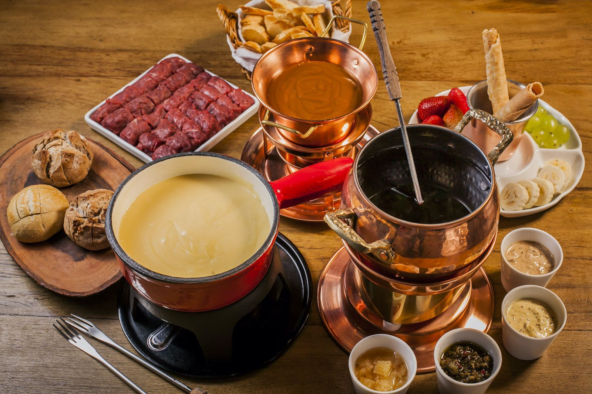
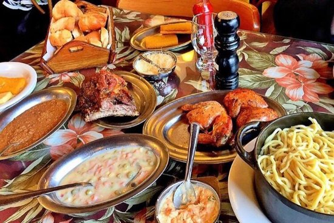
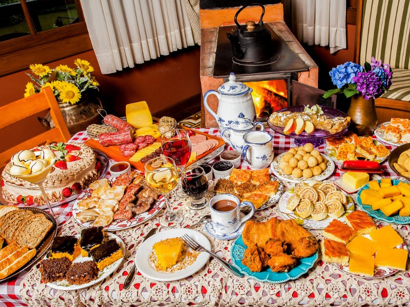
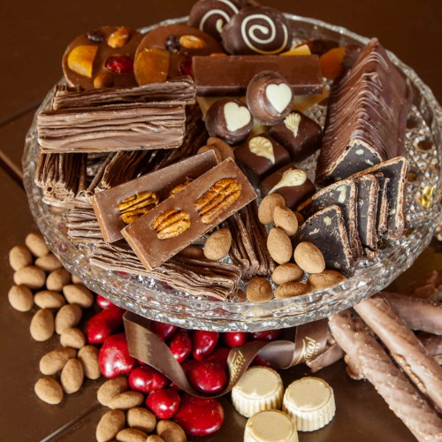

1. Fondue

O fondue é uma das refeições mais tradicionais em Gramado, especialmente durante o inverno. Muitos restaurantes da cidade oferecem sequências completas de fondue, que incluem queijo (servido com pão e vegetais), carne (com cortes variados e molhos) e chocolate (acompanhado de frutas). O ambiente acolhedor da cidade e o clima frio tornam o fondue uma experiência gastronômica ideal para o turista.
2. Galeto ao Primo Canto

O galeto ao primo canto é um prato típico da culinária italiana e muito popular em Gramado. Ele consiste em um frango jovem assado lentamente até ficar suculento e macio, temperado com ervas e especiarias. O prato geralmente é servido com acompanhamentos como polenta frita, massas caseiras, queijo à dorê, radicci com bacon, salada de batata e sopas. É uma refeição abundante e cheia de sabor, muito comum nos restaurantes italianos da região.
3. Cafe colonial

O café colonial é uma refeição farta e muito popular em Gramado. Ele é uma tradição trazida pelos imigrantes alemães e italianos, e inclui uma grande variedade de pães, bolos, cucas, biscoitos, embutidos, queijos, geleias, tortas e doces caseiros. Além disso, é comum encontrar pratos como salsichas, empadas, pastéis e outros salgados. Essa refeição geralmente é acompanhada de café, chás, chocolate quente e sucos, sendo perfeita para experimentar uma diversidade de sabores locais em uma única refeição.
4. Chocolate artesanal

Gramado é conhecida como a “terra do chocolate” no Brasil. A tradição de produção de chocolates artesanais começou com os imigrantes europeus, e até hoje, a cidade é famosa por suas chocolaterias. Os chocolates variam de bombons e trufas a barras e figuras de chocolate, com sabores variados e ingredientes de alta qualidade. Durante a visita à cidade, muitos turistas aproveitam para conhecer as fábricas de chocolate e degustar as delícias locais.